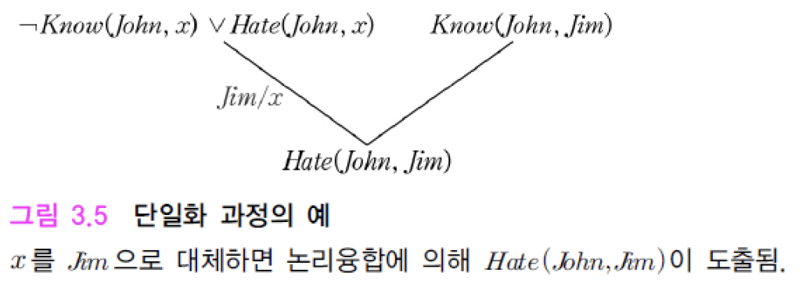

13th
술어 논리의 종류
일차 술어논리 (first-order predicate logic, FOL)
변수에만 전칭 한정사와 존재 한정사를 쓸 수 있도록 한 술어논리
고차 술어논리 (high-order predicate logic)
변수 뿐만 아니라 함수, 술어기호 등에 대해서 전칭 한정사와 존재 한정사를 쓸 수 있도록 한 술어논리
\[ \exists{S}~S(x) \]
\[ \exists{g}\forall{x}~(f(x) = h(g(x)) \]
술어 논리의 종류
\[ \exists~x~p(x) \equiv \exists~y~p(y), \forall~x~p(x) \equiv \forall~y~p(y) \]
\[ \neg~\exists~x~p(x) \equiv \forall~x~[\neg{p(x)}], \neg~\forall~x~p(x) \equiv \exists~x~[\neg{p(x)}] \]
\[ \forall~x~[p(x)~\land~q] \equiv \forall~x~p(x)~\land~q, \forall~x~[p(x)~\lor~q] \equiv \forall~x~p(x)~\lor~q \]
\[ \exists~x~[p(x)~\land~q] \equiv \exists~x~p(x)~\land~q, \exists~x~[p(x)~\lor~q] \equiv \exists~x~p(x)~\lor~q \]
\[ \forall~x~[p(x)~\land~q(x)] \equiv \forall~x~p(x) \land \forall~x~q(x) \]
\[ \exists~x~[p(x)~\land~q(x)] \equiv \exists~x~p(x)~\land \exists~x~q(X) \]
술어 논리의 지식표현
Whoever can read if literate. (읽을 수 있으면 문맹이 아니다)
\[ \forall~x~[CanRead(x) \to Literate(x)] \]
Monkey are not literate. (원숭이는 문맹이다)
\[ \forall~x~[Monkey(x) \to \neg{Literate(x)}] \]
Some monkeys are intelligent. (어떤 원숭이는 지능적이다)
\[ \exists~x~[Monkey(x)~\land~Intelligent(x)] \]
Some who are intelligent cannot read. (지능적이어도 문맹일 수 있다)
\[ \exists~x~[Intelligent(x)~\land~\neg{CanRead(x)}] \]
술어 논리의 추론
술어 논리식의 CNF로의 변환과정
전칭한정사와 존재한정사를 논리식의 맨 앞으로 끌어내는 변환
전칭한성사에 결합된 변수
- 임의의 값 허용
존재한정사에 결합된 변수
- 대응되는 술어 기호를 True로 만드는 값을 변수에 대응시킴
스콜렘 함수 (Skolem function)
존재한정사에 결합된 변수를 해당 술어의 전칭한정사에 결합된 다른 변수들의 새로운 함수로 대체
\[ \forall~x~\exists~y~[P(x)~\land~Q(x, y)] \]
\[ \forall~x~[P(x)~\land~Q(x, s(x))] \]
s(x)는 Q(x, s(x))를 어떤 x에 대해서도 참으로 만드는 마법의 함수 (magic function)
단일화(unification) 과정
논리융합(resolution)을 적용할 때는 대응되는 리터럴이 같아지도록, 변수의 값을 맞춰주는 과정

술어 논리로 지식의 증명
Some who are intelligent cannot read. (지능적이어도 문맹일 수 있다)
\[ \exists~x~[Intelligent(x)~\land~\neg{CanRead(x)}] \]


논리 프로그래밍 언어
Horn 절 (Horn clause)
논리식을 논리합의 형태로 표현할 때, \(\neg{A(s)} \lor \neg{B(x)} \lor C(x)\)와 같이 긍정인 리터럴을 최대 하나만 허용
Prolog
Horn 절만 허용하는 논리 프로그래밍 언어

백트래킹 (backtracking)을 이용해 실행